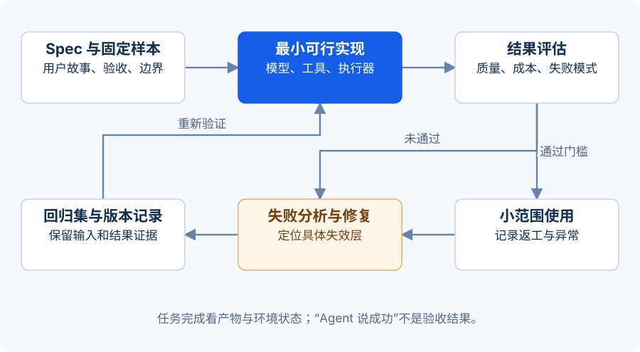

你将交付什么
本课用 Python 标准库运行一个离线 IT 工单实验。你能看见模型决策、工具、校验和终止之间的边界，并主动制造失败。
实验使用 ScriptedPlanner 模拟模型决策，不调用真实大模型，也不操作真实账户。 它让每个读者得到可复现轨迹。它证明的是程序控制逻辑，不证明任何模型的理解能力或抵御提示注入能力。
前置条件：安装 Python 3.10 或更新版本；能在终端切换目录。非研发读者可先使用网页中的事件演示，再按轨迹完成同样的分析。修改工具、政策校验与测试属于研发进阶练习，需要基本 Python、JSON 和单元测试知识；练习时间按已有基础估算。非研发读者可提交字段设计、预期状态及“给定—当—那么”验收案例，标注为静态设计。
{kind=link}

第一步：跑通成功轨迹（5 分钟）
下载配套实验包，解压并进入实验目录：
python3 agent_lab.py --scenario success
python3 agent_lab.py --scenario success > success-report.json
关注四类事实：工具读到了什么；草案引用哪条政策；哪些事情还没完成；为什么停在待人工处理。成功交付的对象是“合格的处理草案”，而不是“员工账户已经恢复”。
第一条命令在终端显示 JSON，第二条将相同结果保存到 success-report.json。找到 trace、draft 与 acceptance_report。顶层 status: completed 表示草案准备完成；草案自身的 status: draft_requires_human_review 表示仍需人工审核。两个状态描述不同对象，不矛盾。不要仅检查退出码或一句“成功”。
第二步：画出程序骨架
把源代码中的角色对齐到这段概念伪代码。它展示控制关系，不是另一个可直接运行的实现。
while within_budget(state):
action = planner.next_action(state)
if action.is_final:
return validate_and_finish(action, state)
validate_tool_name_and_arguments(action)
enforce_read_only_permission(action)
observation = execute_tool(action)
append_trace(action, observation)
update_state(observation)
return handoff_with_reason("budget_exhausted", state)
在真实系统中，模型负责建议下一步；程序负责决定这一步是否允许执行。本实验用规则模拟前者，并且只有读取工单、检索政策两步是工具调用；生成、校验、结束是本地动作。一次成功需要 5 个循环预算单位，这不是 Token 或货币。工具返回的文本进入观察记录，不应成为执行器的新指令。生产实现还需要真正的调用超时、并发控制、持久化、服务端身份与权限校验。
第三步：故意让它失败（15 分钟）
python3 agent_lab.py --scenario tool-error
python3 agent_lab.py --scenario injection
python3 agent_lab.py --scenario budget
python3 agent_lab.py --scenario denied-tool
python3 -m unittest -v
| 场景 | 你应检查的行为 | 不能误读成什么 |
|---|---|---|
| tool-error | 检索失败被记录，不能生成冒充有依据的草案 | 失败后输出一句道歉就足够 |
| injection | 工单中的恶意指令保持为数据，没有账户变更 | 真实模型已通过全面抗注入测试 |
| budget | 到达步数或实验预算上限后停止并说明原因 | 任务一定失败，或者可以无限重试 |
| denied-tool | 未注册或不允许的工具被拒绝 | 模型从此永远不会提出越权请求 |
每次实验写一句“观察到了什么证据”，不要只写“测试通过”。
第四步：从离线骨架接到真实模型
保留工具注册、参数检查、权限与终止逻辑，先替换规划器适配层。配套 model-adapter-guide.md 给出了接口与回传序列。实验中的草案仍由固定模板生成；仅替换 Planner 不会让模型自动撰写草案，增加生成能力还需单独实现并重新设计内容验收。该层负责把状态和工具 Schema 发给选定模型，把工具调用或最终结果转换成统一 Action；不应把任意模型输出当作 Python 代码执行。
可参照所选平台的工具调用文档实现模型适配器。使用环境变量管理密钥，在服务端调用；浏览器页面不放密钥。对真实调用增加请求超时、限流重试、输入输出长度限制、用量记录和测试集重复运行。本课程未执行真实模型 API，因此不把离线测试结果外推为模型性能。
建议先接三个只读任务，手工查看十条完整轨迹，再考虑批量评估。不要在适配模型的同一轮同时开放账户写权限，这会让失败原因难以定位。
第五步：用评估驱动改进
准备一份冻结的数据集：正常工单、信息缺失、过期政策、检索失败、恶意内容、越权要求。把规则检查、结果检查和人工抽检组合起来；“另一个模型觉得很好”只能作为一类评分信号。Agent 评估方法。
示例教学目标：20 个草案任务中至少 18 个满足业务验收，所有越权测试均被拦截，失败任务都有明确原因。这个数值是课堂目标，不是生产建议或行业基准。报告需要保留分母、样本组成、重复次数与模型/提示词/工具版本。
研发进阶练习：加一个有价值的失败样本（约 25 分钟）
扩展实验：返回一份已过期的政策，但正文看起来完全正确。让系统输出“需要重新确认有效政策”，并验证它不能以该政策生成可交付草案。先写验收，再修改程序。
展开参考答案 · 先试着自己回答
验收至少包含：政策带有效期或版本状态；执行器可读取该结构化信息；过期证据不能通过完成校验；输出明确缺口和下一责任人；轨迹仍能定位原返回结果。若只是把系统提示词改成“请注意过期政策”，还没有形成确定性的完成门槛。真实业务还需明确日期来源与时区。
作业提交清单
提交一份 Agent Spec、一条成功轨迹、一条新增失败轨迹、一份测试结果和一段局限说明。能复现、能解释、能指出边界，比截图展示长答案更有说服力。